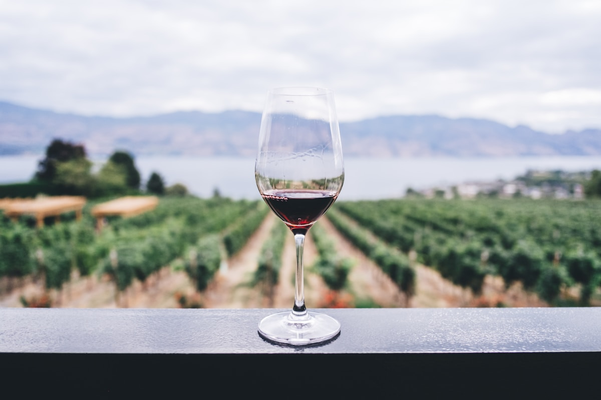

乡居民宿
乡居民宿
面前埔 · 香村驿站
依托闽南红砖古厝肌理，改造为可过夜、可茶叙、可小型雅集的乡居驿站，强调「住一夜、识一村」的慢体验。
Investment Portfolio
以下为代表性投资与策划方向示意，具体项目以商务洽谈与实地调研为准。
乡居民宿
依托闽南红砖古厝肌理，改造为可过夜、可茶叙、可小型雅集的乡居驿站，强调「住一夜、识一村」的慢体验。

农旅酒旅串联葡萄采摘、轻酿体验与田园步道，打造「从藤上到杯中」的可视化酒旅线路，服务周末微度假客群。
 村落活化
村落活化
以「轻改造、重内容」推动老宅展厅、乡创摊位与节庆市集共生，让村民成为运营主体，资本做长期陪跑。
 研学康养
研学康养
面向亲子与都市白领，设计农事体验、食农教育与自然静修课程，延伸乡村旅游的停留时长与复购率。
有地块、老宅或农旅资源希望合作？欢迎预约实地考察。
预约洽谈